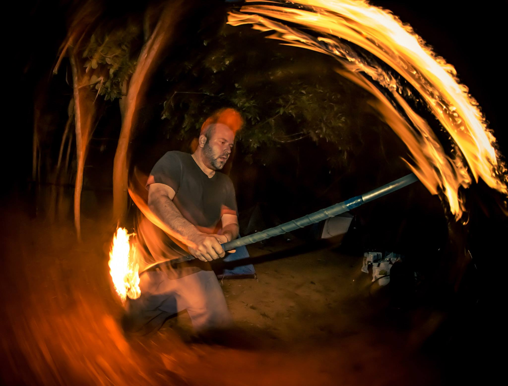
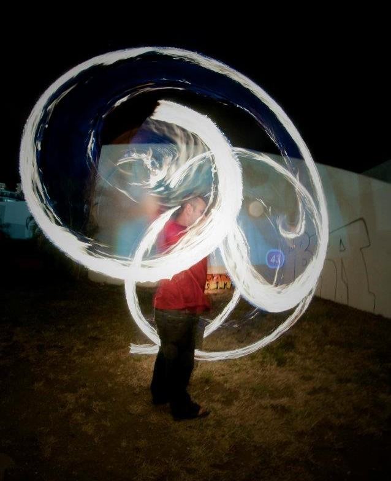
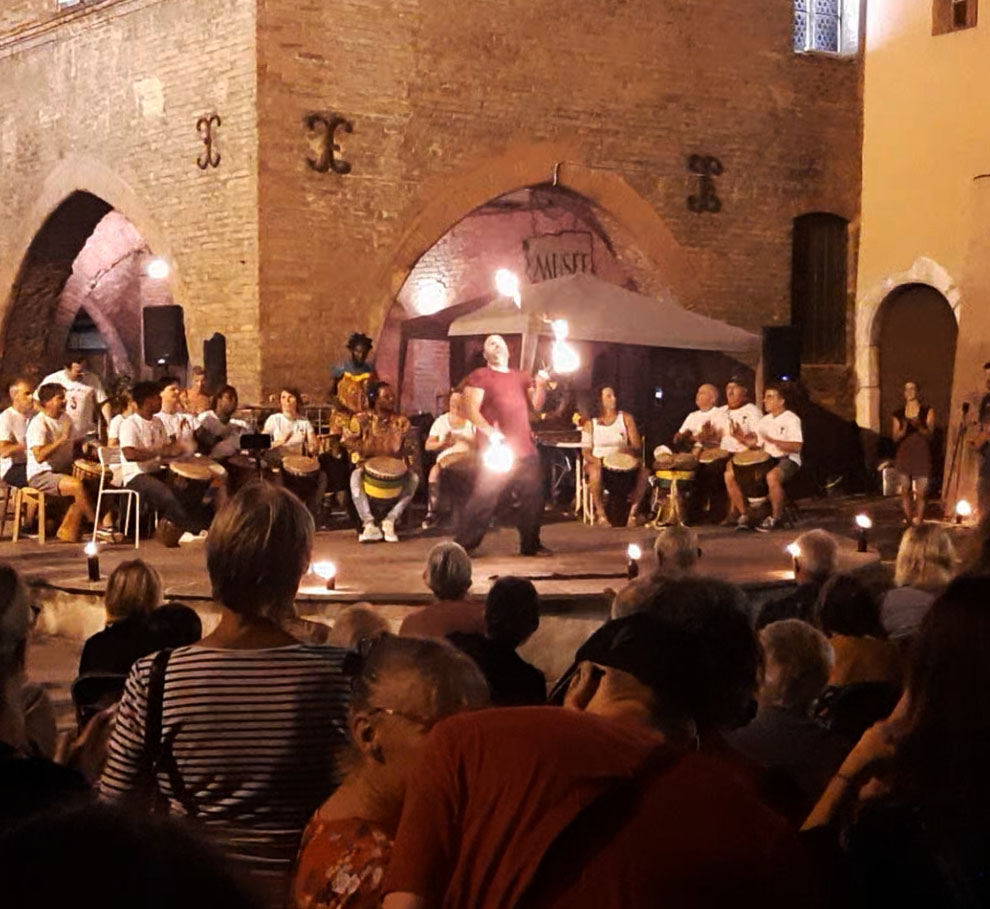
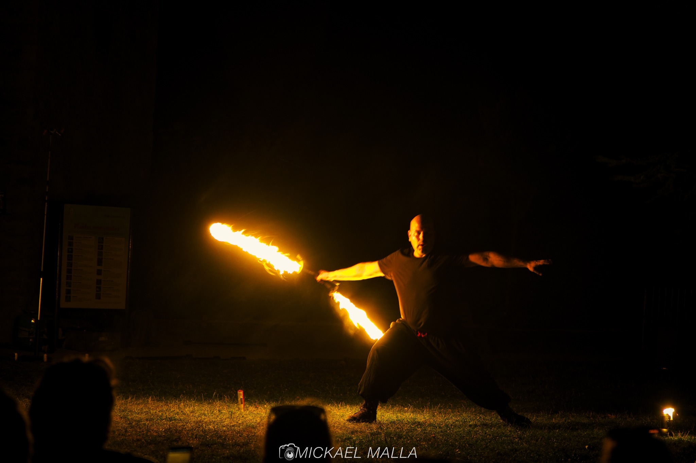
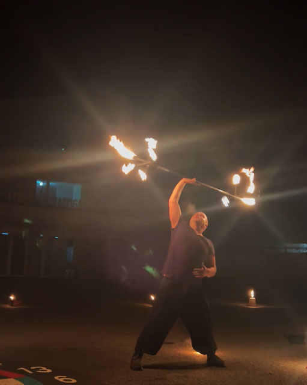
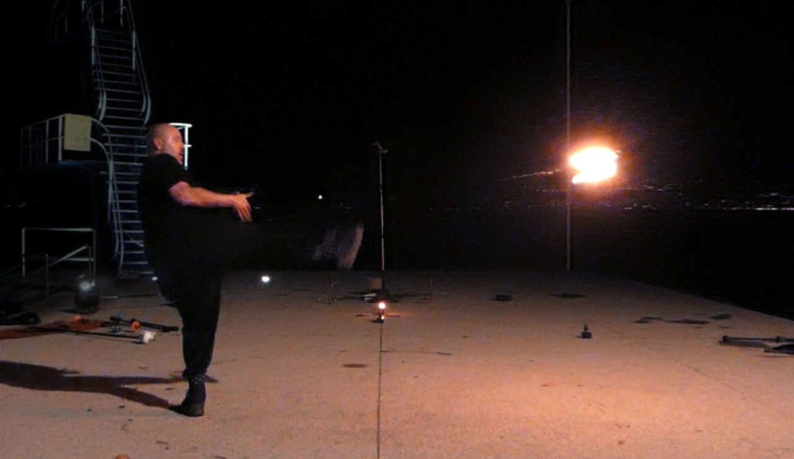
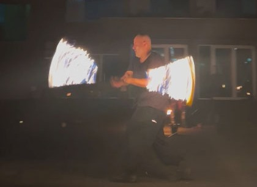
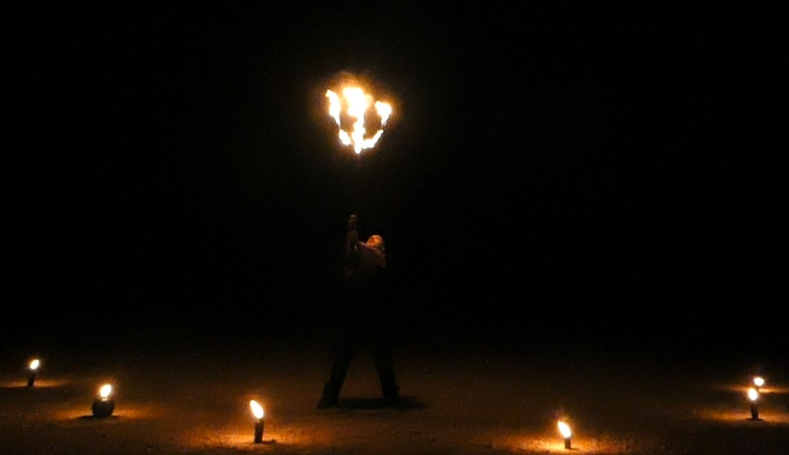

Le jonglage enflammé
Je propose des démonstrations de jonglage de feu, à la fois fluides, visuelles et maîtrisées, fruit de plus de 15 ans de pratique et d’expérience.
La prestation peut prendre la forme d’une ou plusieurs sessions réparties au cours de votre soirée et adaptées à la durée de votre événement.
Elle peut constituer une animation à part entière ou venir compléter la programmation de votre fête. Mais c'est quoi au juste le jonglage de feu?
Le jonglage de feu ou jonglage enflammé est un terme couramment utilisé pour désigner une pratique plus large, mêlant mouvement, manipulation et feu. Elle fait appel à de nombreux agrès, chacun offrant sa propre manière de jouer avec les rotations, les trajectoires et les flammes.
Le but n’est pas simplement de faire tourner un objet : il s’agit de créer des figures, des mouvements et des motifs, en jouant avec le rythme, la fluidité et l’espace. Au fil des enchaînements, l’agrès devient presque une extension du corps et le feu accompagne chaque mouvement.
Il y a dans cette pratique quelque chose d’intemporel. Observer une flamme tourner, accélérer, ralentir et dessiner des formes dans l’obscurité procure une sensation particulière, presque hypnotique. C’est un dialogue permanent entre le mouvement, la lumière et le feu.
Après plus de quinze ans de pratique, cette recherche continue de me passionner.
Chaque agrès, chaque mouvement et chaque nouvelle figure offre une possibilité d’explorer davantage cette relation avec le feu.
C’est cette liberté de créer, de chercher et de faire danser les flammes qui m’anime encore aujourd’hui.
Le bâton de feu (staff)
Le staff est l’agrès avec lequel j’ai découvert le jonglage et avec lequel j’ai commencé à explorer le monde du Flow Art. Simple en apparence, il offre pourtant une incroyable richesse de mouvements : rotations, lancers, isolations, manipulations sans les mains et enchaînements permettent de créer une multitude de figures et de styles.
Le staff peut se pratiquer avec un, deux, voire trois bâtons simultanément, offrant à chaque fois de nouvelles possibilités et de nouveaux défis. C’est cette richesse et cette liberté de mouvement qui m’ont rendu passionné par cet agrès au fil des années.
C’est aujourd’hui cette passion que je transmets en tant que professeur à Tribe School,
une école en ligne dans laquelle j’accompagne les pratiquants dans leur progression au staff.

Les bolas "poï"
Après avoir longtemps exploré le bâton, il m’est naturellement venu l’envie de découvrir les bolas. Les bolas sont constituées de boules de feu reliées à des chaînes, que l’on fait tourner autour du corps. Avec le bâton ce sont les agrès les plus répandus dans le milieu du Flow-Art. Leur fonctionnement est à la fois proche du bâton sur certains aspects mais tout de même très différents car elles offrent de nouvelles possibilités de mouvement et de création.
Leur particularité est de devoir apprendre à synchroniser ou désynchroniser les deux bolas. Cela demande parfois de se casser un peu le cerveau, mais une fois cette coordination maîtrisée, les possibilités deviennent nombreuses : cercles, fleurs, croisements et autres motifs permettent de créer des mouvements très variés avec les flammes et de très jolies photos en pause longue.

Les massues
Les massues, ou leur version enflammée, les torches, sont les agrès du jonglage traditionnel et font partie des grands classiques des arts du cirque. Le principe consiste à lancer et rattraper plusieurs massues de manière synchronisée, tout en variant les figures, le nombre de rotations, la hauteur des lancers ou encore le rythme.
Elles peuvent également être échangées entre plusieurs jongleurs, permettant de réaliser des passes et des enchaînements collectifs.
Elles se pratiquent généralement à trois massues, mais les jongleurs les plus expérimentés peuvent en manier davantage, ce qui augmente considérablement la difficulté. Chaque lancer devient alors un véritable jeu de précision, de coordination et de rythme.

Les épées
Les épées permettent de retrouver une partie des mouvements du bâton tout en ajoutant une dimension plus spectaculaire et martiale. On peut s’inspirer des techniques de combat des arts martiaux asiatiques ou de l’escrime médiévale pour créer des enchaînements et des tableaux particulièrement épiques. J’aime bien les utiliser par deux et les combiner pour créer de nouvelles possibilités de manipulation. Une fois réunies, elles forment une sorte d’arme enflammée à double lame, façon Dark Maul, qui permet de construire des mouvements très visuels et dynamiques.

Le dragon-staff
Le dragon-staff est une variante du bâton, reconnaissable à ses extrémités en forme de branches ou de pointes. Il offre une sensation de mouvement différente et permet de créer des rotations continues autour du corps, avec des changements de direction et de rythme très fluides.
Sa forme particulière permet de jouer avec les différentes parties de l’agrès et de multiplier les possibilités de manipulation. On peut le faire circuler autour du corps, changer son axe de rotation ou enchaîner les mouvements sans véritablement interrompre son élan.
Avec le feu, les flammes suivent ces rotations et dessinent de grandes trajectoires autour du corps, donnant au dragon-staff un aspect particulièrement spectaculaire et presque surnaturel. C’est un agrès qui demande de la précision, mais qui offre en retour une grande liberté de mouvement et des possibilités visuelles très fortes.

Le rope-dart
Le rope-dart est une arme souple traditionnelle des arts martiaux chinois, composée d’un poids ou d’une pointe reliée à une longue corde. Cet agrès demande beaucoup de précision pour contrôler sa trajectoire et anticiper ses mouvements. La longueur de la corde permet de créer de grandes rotations, des spirales, des lancers et des enchaînements très dynamiques. Une fois lancé, le rope-dart peut parcourir de grandes trajectoires autour du corps avant de revenir dans les mains. Cette sensation de mouvement continu et très libre en fait un agrès particulièrement fascinant à manipuler, et encore plus spectaculaire lorsqu’il est enflammé.

Les cordes
Les cordes sont une variante des bolas, avec un fonctionnement proche mais une longueur de flamme supérieure. Elles créent des effets visuels plus impressionnants, au détriment de la maniabilité et de la réalisation de certaines figures. C’est un agrès que j’aime particulièrement utiliser à grande vitesse, pour profiter de leur longueur et dessiner de grands cercles de feu autour du corps. Le mouvement devient alors très ample et les flammes forment de véritables halos lumineux.

Les agrès faits maison
J’ai également fabriqué certains agrès originaux, notamment pour mes spectacles d’Halloween : une fourche ainsi qu’une faux enflammée. Ces créations se manipulent en partie comme un bâton ou un dragon-staff, tout en apportant une esthétique très différente. Au-delà de la technique, ces agrès me permettent surtout de sortir des classiques et d’ajouter une touche d’originalité aux spectacles, en créant des accessoires directement adaptés à l’univers et aux personnages mis en scène.

Organiser une démonstration de jonglage de feu à partir de 450 €
Vous souhaitez proposer du jonglage enflammé lors de votre événement ? Parlons du lieu, du public et du format qui vous conviendrait.
Demander un devisRéponse personnalisée et devis gratuit.